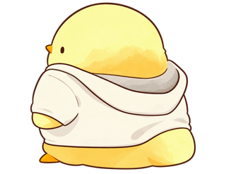
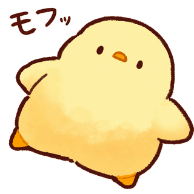

CRUZA SIN MIRAR ATRÁS
CRASH CHICKEN
PUNTOS0
RÉCORD0
¡LLEGADA!
INICIO


¡Crash Chicken!
Usa las flechas o WASD para cruzar.
Recoge maíz (+25). Pulsa R para reiniciar.
CRUZA SIN MIRAR ATRÁS


Usa las flechas o WASD para cruzar.
Recoge maíz (+25). Pulsa R para reiniciar.